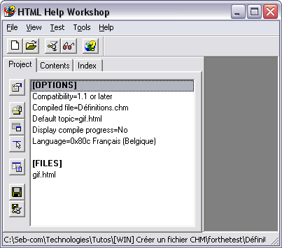

CHM signifie Compiled HTML. En clair, ce sont des fichiers HTML compilés. Ces fichiers sont lisibles sous toutes les versions de Windows, à partir de la version 98. Il est également possible de lire ces fichiers sous MacOS (il vous faut CHMViewer 1.1.5) et Linux (il vous faut chmviewer). Si vous voulez voir un exemple de fichier CHM, ouvrez le Bloc-notes de Windows, et faites F1.
L'avantage des fichiers CHM réside dans le fait que tout le contenu est inclus dans un seul fichier. Ainsi, l'aide d'un logiciel peut être contenue dans un seul de ces fichiers, alors qu'une aide ou format HTML serait composée de plusieurs centaines de fichiers séparés.
Microsoft HTML Help Workshop
Pour commencer, allez télécharger le logiciel ici : en direct de MS
Une fois téléchargé, installez-le.
Les fichiers HTML
Pour la pratique, nous allons faire un fichier CHM en partant de deux fichiers HTML tout fait. Histoire de vous montrez une vue d'ensemble de HTML Help Workshop, je vais utiliser 2 définitions de Wikipédia, en version allégée (du point de vue design). Pour la simplicité, je vous ai compressé ces 2 pages, ainsi que les fichiers nécessaires à leur bon fonctionnement dans l'archive suivante (en .zip) :
Pour commencer, ouvrez HTML Help Workshop. Comme vous pouvez le constater, le programme n'a pas l'air très intuitif (mais l'air ne fait pas la chanson :D ). Cliquez sur le menu Files, puis sur New. Dans la boîte de dialogue, sélectionnez Project. C'est alors que le magicien arrive :magicien: . Cliquez sur Suivant.
Dans cette nouvelle étape, cliquez sur Browse, et allez dans le dossier où vous avez décompressé l'archive ZIP que je vous ai donnée. Dans le champ Nom de fichier, tapez le nom du fichier .hhp que vous allez créer. Moi je mets Définitions:
Euh, c'est quoi un fichier HHP ? On ne fait pas un CHM ici ?
Ah, je l'attendais cette question :) Eh bien le fichier HHP est un fichier qui va contenir tout ce dont HTML Help Workshop a besoin pour créer un fichier CHM. C'est un peu le fichier de configuration.
Revenons-en à notre assistant. Cliquez sur Suivant. Dans cette nouvelle étape, l'assistant demande si on a déjà créé certains fichiers. Cochez juste la case HTML files. Cliquez sur Suivant.
Maintenant, il s'agit, comme vous l'aurez déjà compris, de renseigner les fichiers HTML qui seront utilisés. Pour l'exercice, vous allez seulement ajouter le fichier gif.html. Cliquez maintenant sur Suivant, puis sur Terminer.
Voici ce que vous devriez obtenir (ou à peu près) :

Ce que vous voyez dans le cadre de gauche, c'est en fait le contenu du fameux fichier HHP.
J'ai repris et expliqué les différentes options :
Compatibility : c'est la version de compatibilité du fichier
Compiled file : c'est le nom que portera le projet une fois compilé en CHM
Default topic : c'est la page qui sera ouverte par défaut lors de l'ouverture du fichier CHM
Display compile progress : afficher ou nom la progression lors de la compilation
Language : la langue du fichier CHM. Comme je suis belge, Windows met que je parle le français de Belgique (oufti, qu'é malin, tès)
Modifier le projet
Les informations disponibles sous la rubrique Options sont modifiables. Il vous suffit de double-cliquer sur une des informations, pour faire apparaître une fenêtre de configuration.
Dans l'onglet General, vous pouvez attribuer un titre à votre fichier. C'est toujours bien pratique ça :lol: . Par ailleurs, vous pouvez aussi modifier la page par défaut. Pour le moment, vous n'avez qu'un seul fichier, donc par défaut, c'est le fichier par défaut (vous me suivez :D ?).
Pour ce qui est des 3 autres onglets, il vaut mieux ne pas y toucher, c'est juste un conseil d'ami :p
Ajouter des fichiers
Vous pouvez évidemment ajouter d'autres pages HTML à votre projet. Pour cela, cliquez sur cette icône :
Une jolie petite fenêtre s'ouvre, vous présentant les fichiers contenus dans votre projet. Pour en ajouter, cliquez sur Add. Profitez-en pour ajouter le fichier png.html.
C'est un peu bête à dire, mais pour ajouter des images, des fichiers de type CSS, JS et SWF, nous allons utiliser la même méthode. Le malheur, c'est que dans la fenêtre d'explorateur ne sont affichés que les fichiers HTML. Vous devrez donc taper complètement le nom de chaque fichier, comme ceci :
Faites de même avec les autres fichiers (titre1.png et fond.gif)
Si vous avez beaucoup de fichiers à incorporer, fermez HTML Help Workshop, et ouvrez le fichier Définitions.hhp avec le Bloc-notes, et ajoutez « à la main » les différents fichiers :
Nous arrivons maintenant à la partie qui demande le plus de temps, et qui est généralement pratique, pour ceux qui vont lire votre fichier CHM.
Dans la fenêtre de HTML Help Workshop, cliquez sur l'onglet Contents. Dans la boîte de dialogue qui s'ouvre, cliquez sur OK. C'est alors que vous vous retrouvez dans une fenêtre d'exploration, vous demandant de nommer un fichier .hhc. Appelez-le Définitions.hhc.
De retour dans le la fenêtre principale du logiciel, nous allons pouvoir commencer à créer.
Cliquez sur l'icône
pour insérer un dossier. Une fenêtre s'ouvre. Définissez-y le titre de votre nouveau dossier :
Cliquez sur OK. Comme vous pouvez le constater, le dossier Définitions est maintenant ajouté dans votre table des matières. Si vous le désirez, vous pouvez changer l'icône qui lui est attribuée. Pour cela, cliquez une fois dessus, puis cliquez sur
. Dans la fenêtre qui s'ouvre, allez sous l'onglet Advanced. Faites + ou - dans la liste à choix Image index, jusqu'à ce que vous trouviez l'icône qui vous convient. Moi je vais choisir celle-ci :
Nous allons ajouter maintenant un lien vers la page gif.html. Pour cela, cliquez sur
. Comme pour le dossier, attribuer lui un titre. Quand c'est fait, cliquez sur Add, pour ajouter un lien. Choisissez dans la liste la page à lier. Remarquez que la liste présente les pages HTML via leur titre, ce qui n'est pas plus mal, je trouve.
Voici ce que j'obtiens :
Cliquez sur OK pour valider. Comme pour le dossier vous pouvez changer l'icône.
Exécutez la même démarche pour le fichier png.html.
Et comment on fait si on veut encore faire des sous-dossiers, et des sous-fiches (des ancres) ?
Ben ce n'est pas très compliqué. Par exemple, nous allons insérer des liens vers des ancres dans le fichier gif.html (les ancres y sont déjà mises, j'avais prévu le coup :lol: ).
Cliquez sur GIF. Ajoutez un fichier, comme nous l'avons fait précédemment. Définissez les options, mais dans le lien, ajoutez le nom de l'ancre (#machin), comme ceci :
Dis donc toi, comment je sais où sont les ancres ?
Ben, comme c'est vous qui avez théoriquement codé la page, vous devriez le savoir, non ? Cela dit, HTML Help Workshop est aussi une sorte d'éditeur HTML. Petit exemple : Nous allons ouvrir la page gif.html, pour voir où sont ces fameuses ancres. Pour cela, cliquez sur GIF, dans l'arborescence de votre table des matières. Dès que c'est fait, cliquez sur l'icône
La page gif.html s'ouvre alors dans le cadre de droite de l'éditeur. Vous pouvez donc voir les ancres qui y sont. Ah oui, petite astuce : dans la page, je n'ai pas fais mes ancres avec la balise A ; j'utilise bêtement l'attribut ID de la balise H2 ;)
Le problème, c'est que ce lien s'est ajouté sous GIF. Or, nous voudrions que ce soit une sous-partie de GIF. Pour cela, cliquez sur
. Dans la boîte de dialogue qui s'ouvre, cliquez sur Oui. C'est fait. Changez-l'icône, pour montrer que c'est une sous-partie.
Voilà. Moi, j'ai continué à faire les ancres pour GIF, et puis pour PNG. Faites-le aussi, pour vous entraîner :
L'index n'est pas du tout obligatoire, mais ça peut être un petit plus. Je ne vais pas m'étendre dessus, car sa réalisation est assez simple, mais fastidieuse. Je vais juste vous expliquer le principe.
L'index est en fait une liste de mots-clés, comme ceci :
Chaque mot clé renvoie à une ou plusieurs pages. Par exemple, moi je vais faire une architecture comme ceci :
Formats d'images
GIF
PNG
Voici les configurations pour chacun des mots-clés :
C'est le moment de compiler notre petit fichier. Commencez par enregistrer votre projet (cliquez sur la petite disquette). Pour compiler, allez dans le menu Files, puis cliquez sur Compile.
Vérifiez que le champ Project files pointe bien sur le fichier Définitions.hhp :
Cliquez sur Compile.
Dans le cadre de droite, toute une série d'informations apparaît. Ces infos font état du bon ou mauvais déroulement de la compilation (il pourrait très bien vous manquer des fichiers par exemple).
La compilation est finie dès que vous voyez écrit Created c:\......... Dans notre exemple, c'est relativement rapide. Mais si vous faites un fichier d'aide avec 1000 fichiers HTML, des images, des fichiers de script et tout, ce sera plus long :D
Vous pouvez maintenant voir le résultat. Pour cela cliquez sur la petite paire de lunettes rose.
Vous avez certainement déjà remarqué que dans certains fichiers CHM, il est possible d'effectuer une recherche sur le texte, ainsi que de mettre en Favoris.
Pour faire cela, nous avons besoins de créer une nouvelle définition de fenêtre.
Eh eh eh oui, bien sur. Et c'est quoi ça ?
Ben c'est juste une série de paramètres qui vont définir l'interface du fichier CHM.
Alors, allez dans l'onglet Project, et cliquez sur cette icône :
. Dans la boîte qui s'ouvre, tapez Définitions. C'est le nom que j'ai décidé d'attribuer à l'ensemble des paramètres de définition de la fenêtre. Validez.
Dans l'onglet Général, définissez un titre. Moi je mets Définitions derechef.
Sous l'onglet Buttons, cochez Hide/Show (afficher/masquer le menu), Back (Page précédente), Forward (page suivante), Options, Print (imprimer), Refresh (Actualiser), et Home (page d'accueil). Ce seront les boutons présents dans la barre de menu de votre CHM.
Si vous cochez Home, allez sous l'onglet Files, et renseignez le champ Home, par la page qui fera office de page de démarrage.
Dans l'onglet Position, mettez les 4 champs à 0. Comme cela, la fenêtre s'ouvrira au centre, avec des dimensions en rapport avec la résolution de l'écran. Cochez aussi la case, de façon à ce que la fenêtre s'ouvre dans les dimensions et la position à laquelle elle était lors de la dernière lecture.
Sous l'onglet Navigation Pane, cochez les 3 dernières cases à cocher. Cela a pour fonction d'ajouter la fonction de recherche, ainsi que la gestion des favoris. La liste Default tab définit l'onglet qui sera ouvert par défaut. Par commodité, je vous recommande de placer cette liste en position Contents, c'est plus joli, comme la table des matièes quand on ouvre un livre explicatif.
Sous l'onglet Extended Styles, vous pouvez cocher Tool window, pour faire genre que vous savez faire un fichier CHM avec une barre de titre fine (je vous laisse tester cette otption). Les outres options ne sont pas utiles.
Cliquez sur OK. Il est possible qu'un assistant s'ouvre, en vous disant (en anglais), qu'il y a des problèmes. C'est à cause de la recherche. Faites Suivant. Là, cochez les 2 cases. Cliquez sur Suivant, puis sur Terminer.

{kind=link}